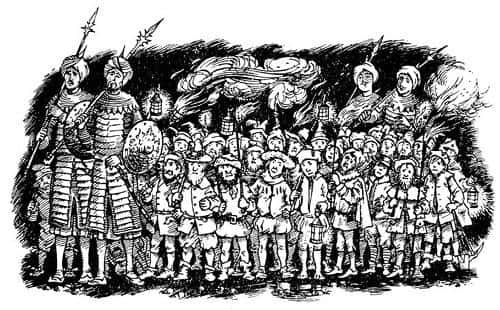
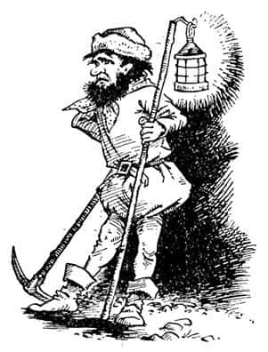
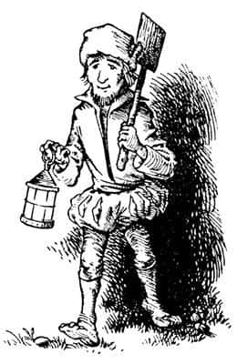

Cüceler
Onları bir Tarkaan ya da yüksek rütbeli bir lord ve silahlı iki uşak sanan grubun başındaki Calormenli iki asker durdu ve mızraklarıyla selam verdi.
“Ey efendi” dedi birisi, “bu küçük adamları, ömrü uzun olsun Tisrok’un madenlerinde çalışmak üzere Calormen’e götürüyoruz.”
“Ulu Taş adına, çok da uysallar” dedi Tirian. Sonra cücelere doğru döndü. Her altı cüceden biri, bir meşale taşıyordu, Tirian o titrek ışıkta sert ve inatçı ifadelerle ona bakan sakallı yüzleri görebiliyordu. “Ey cüceler, Tisrok büyük bir savaş kazandı da ülkenizi ele mi geçirdi ki boyun eğmiş, Rugrahan’ın tuz kuyularında ölmeye gidiyorsunuz?” diye sordu.
İki asker şaşkınlıkla ona baktı, cüceler hep bir ağızdan cevapladı, “Aslan’ın emirleri, Aslan’ın emirleri. Bizi o sattı. Ona nasıl karşı gelebiliriz ki?”

“Tisrok’muş!” dedi birisi ve yere tükürdü. “Şimdi karşıma bir çıksın isterdim.”
“Susun, köpekler!” dedi askerlerin kumandanı.
“Bakın!” dedi Tirian, Şaşkaloz’u aydınlığa çıkararak. “Her şey yalandı. Aslan Narnia’da değil. Maymun sizi aldattı. Ahırdan size göstermek için çıkardığı şey bu. Bakın şuna.”
Cücelerin gördüğü şey (artık yakından görebildikleri için) nasıl aldatıldıklarını anlamalarına yeterliydi. Şaşkaloz’un ahırdaki mahpusluğu sırasında aslan postu oldukça eskimiş, karanlık ormandaki yolculukları sırasında da iyice bozulmuştu. Büzüşmüş, iri bir yığın halinde omzunun üzerinde toplanmıştı. Başı yan tarafa kaymış, iyice geriye sıyrılmıştı; herkes eşeğin komik ve nazik yüzünü görebiliyordu. Eşeğin ağzının bir köşesinden bir miktar ot sarkıyordu; yolda otlanmıştı. “Benim hatam değil ki, akıllı değilim. Akıllı olduğumu hiçbir zaman söylemedim” diye mırıldanıyordu.
Tüm cüceler ağızlarını açıp Şaşkaloz’a bakakaldılar. Askerlerden biri, “Deli misiniz, efendim? Kölelere ne yapıyorsunuz?” dedi. Bir diğeri de, “Siz kimsiniz?” diye sordu. İkisi de mızraklarını indirmişti ve saldırmaya hazırdı.
“Parolayı söyle!” dedi askerlerin kumandanı.
“İşte benim parolam” dedi Kral kılıcını çekerken. “Şafak söküyor, yalanlar çöküyor. Şimdi kolla kendini vicdansız, çünkü ben Narnialı Tirian’ım.”
Şimşek gibi kumandanın üzerine atıldı. Kralın saldırdığını görünce kılıcını çeken Eustace diğer askerin üzerine atıldı. Yüzü bembeyazdı, ama bundan dolayı onu suçlayamayız. Eustace’in başarısını şöyle açıklayabiliriz: Acemi şansı. O gün öğleden sonra Tirian’ın ona öğrettiklerinin hepsini unutmuştu, kılıcını çılgınca sallamış (aslında gözlerinin kapalı olup olmadığından emin değilim) ve sonra, büyük bir şaşkınlıkla Calormenli’nin yerde, ayaklarının dibinde yattığını görmüştü. Calormenli’nin ölümü onu rahatlatmış olsa da, o an için korkutucuydu. Kral bir-iki saniye daha savaşmıştı. Sonra o da rakibini hakladı ve Eustace’e bağırdı, “Diğer ikisine dikkat et.”
Neyse ki cüceler öbür iki Calormenli’nin icabına bakmıştı. Düşmanların işi bitirilmişti.
“İyi savaştın, Eustace!” diye bağırdı Tirian, sırtını sıvazlayarak. “Cüceler, artık özgürsünüz. Yarın başınızda ben, tüm Narnia’yı kurtaracağız. Aslan için üç hurra!”
Cücelerin tepkisi tuhaftı. Birkaç cücenin (yaklaşık beş) bağırmasıyla susması bir olmuş, diğerlerinin bir kısmı asık suratla hırlamaya benzer sesler çıkarmıştı. Birçoğu tek kelime etmemişti.
“Anlamıyor musunuz?” dedi Jill sabırsızca. “Sizin neyiniz var? Kral’ın dediklerini duymadınız mı? Her şey sona erdi. Maymun artık Narnia’ya hükmetmeyecek. Herkes günlük yaşamına geri dönebilir. Tekrar eğlenmeye başlayabilirsiniz. Memnun değil misiniz?”
Yaklaşık bir dakikalık duraklamadan sonra, saçları ve sakalları kömür karası, kaba görünüşlü bir cüce, “Sen de kim oluyorsun, Bayan?” dedi.
“Ben Jill’im” dedi. “Kral Rilian’ı büyüden kurtaran Jill - ve bu da aynı şeyi yapan Eustace - yüzlerce yıl sonra başka bir dünyadan geri döndük. Bizi Aslan gönderdi.”

Cüceler küçümser ifadelerle, sırıtarak birbirlerine baktılar.
“Pekâlâ” dedi ismi Kıkır olan kara cüce, “siz delikanlıların ne düşündüğünü bilmiyorum, ama ben yaşamımın sonuna yetecek kadar Aslan hikâyesi dinledim.”
“Doğru, doğru” diye hırladı diğer cüceler. “Hepsi hikâye, sırf hikâye.”
“Ne demek istiyorsunuz?” dedi Tirian. Kavga ederken bir an olsun bile yüzü sararmamıştı, ama şimdi beti benzi atmıştı. Bunun harika bir an olacağını düşünmüştü ama her şey kötü bir rüyaya dönüşmekteydi.
“Aklımızın başımızda olmadığını düşünüyor olmalısınız, evet öyle olmalı” dedi Kıkır. “Bir defa aldandık ve şimdi siz bir dakika sonra yine aldatmaya çalışıyorsunuz. Artık Aslan hikâyelerinin hiçbir yararı yok, anlıyor musun? Şuna bak! Uzun kulaklı bir eşek.”
“Aman Tanrım, beni kızdırıyorsunuz” dedi Tirian. “Hangimiz onun Aslan olduğunu söyledi ki? Bu Maymun’un size aslan diye yutturduğu eşek. Anlamıyor musunuz?”
“Sanırım, elinde daha iyi bir taklit var” dedi Kıkır. “Teşekkürler, ama istemiyoruz. Bir kere aldatıldık, bir daha aldatılmayacağız.”
“Hayır” dedi Tirian öfkeyle, “ben gerçek Aslan’a hizmet ediyorum.”
“Nerededir o? Kimdir? Göster bize!” dedi cücelerin çoğu.
“Onu cebimde tuttuğumu mu sanıyorsunuz, aptallar?” dedi Tirian. “Ben kimim ki onu istediğim an gösterebileyim? O uysal bir aslan değildir.” Bu sözler ağzından çıktığı an yanlış bir şey söylediğini anladı. Cüceler hemen, “Uysal bir aslan değildir, uysal bir aslan değildir” diye tekrarlamaya, alay etmeye başlamışlardı. “Diğerleri de bunu söyleyip duruyordu” dedi birisi.
“Gerçek Aslan’a inanmadığınızı mı söylemek istiyorsunuz?” dedi Jill. “Ben onu gördüm. Bizi buraya başka bir dünyadan o gönderdi.”
“Ah” dedi Kıkır, gülerek. “Sen öyle diyorsun. Sana söylenenleri iyi öğrenmişsin. Ezberden konuşuyorsun, değil mi?”
“Kaba herif” diye bağırdı Tirian, “bu bayanı, yalancılıkla mı suçluyorsun?”
“Ağzınızdan çıkanlara dikkat edin, Bayım” diye cevapladı cüce. “Başka aslanlar istemediğimiz gibi - eğer Tirian’san, ki hiç benzemiyorsun - başka krallar da istemiyoruz. Bundan sonra kendi başımızın çaresine bakacak, kimseye şapka çıkarmayacağız. Anlıyor musunuz?”
“Doğru” dedi diğer cüceler. “Artık kendi başımızayız. Ne Aslan ne krallar ne de başka dünyalar hakkında hikâye dinlemek istiyoruz. Cüceler, cüceler için.” Sonra yerlerine geçip geldikleri yere dönmek için hazırlanmaya başladılar.
“Küçük canavarlar” dedi Eustace. “Tuz madenlerinden kurtarıldığınız için teşekkür etmeyecek misiniz?”
“Ah, bunun nedenini biliyoruz” dedi Kıkır başını çevirerek. “Bizden yararlanmak istediniz, kurtarmanızın nedeni bu. Kendinize göre bir oyun oynuyorsunuz. Haydi arkadaşlar.”
Tirian ve dostları cücelerin ardından bakakaldı. Sonra Tirian, “Gelin” dedi dostlarına ve yola devam ettiler.
Sessiz bir gruptu. Şaşkaloz hâlâ yüzkarası olarak görüyordu kendini, neler olduğunu anlamamıştı. Jill, cücelerden iğrenmiş, Eustace’in Calormenli’ye karşı kazandığı zaferden çok etkilenmişti, kendini saf ve neredeyse işe yaramaz hissediyordu. Eustace’e gelince, kalbi oldukça hızlı çarpıyordu. Tirian ve Cevher üzgün bir şekilde arkadan yürüyordu. Kral kolunu Cevher’in omzuna atmıştı ve at kimi zaman yumuşak burnuyla Kral’ın yanağına dokunuyordu. Birbirlerini teselli etmeye çalışmıyorlardı. Rahatlatıcı bir şeyler söylemek pek kolay değildi. Tirian, maymunun sahte bir aslan yaratmasının sonucunun, insanların gerçek Aslan’a inancının sarsılması olacağına rüyasında görse inanmazdı. Cücelere aldatıldıklarını gösterdiği an, hepsinin birden kendi tarafında toplanacaklarından emindi. Ertesi gece onları Ahır Tepe’ye götürerek Şaşkaloz’u tüm yaratıklara gösterecek ve herkes Maymun’a karşı ayaklanacak, belki Calormenliler’le biraz çekiştikten sonra her şey sona ermiş olacaktı. Ama öyle görünüyordu ki bundan sonra hiçbir şeye güvenemezdi. Acaba Narnialılar’dan kaçı, cüceler gibi davranacaktı?
“Sanırım arkamızda biri var” dedi Şaşkaloz aniden.
Durup dinlediler. Gerçekten de küçük ayakların pıtır pıtır yere vuruşunu duydular.
“Kim var orada?” diye bağırdı Kral.
“Sadece ben, efendim” diye bir ses geldi. “Ben, Zıpır. Az önce diğerlerinden ayrılmayı başarabildim. Ben sizden yanayım, efendim. Ve Aslan’dan. Elime bir cüce kılıcı verirseniz, tüm gücüm tükenmeden önce düşmanlarımıza birkaç darbe vurmaktan memnuniyet duyarım.”

Herkes cücenin etrafına toplanıp, “Hoş geldin” dedi, övgüler yağdırıp sırtını sıvazladı. Kuşkusuz tek bir cüce pek bir şey değiştirmezdi, ama birinin bile doğrudan yana olması huzur vericiydi. Tüm grup canlanmıştı. Ne var ki, Jill ile Eustace’in canlılığı çok uzun sürmedi, yatmaktan başka bir şey düşünemeyecek kadar yorgunlardı ve sürekli esniyorlardı. Şafaktan az önce, gecenin en soğuk saatinde tekrar kuleye ulaştılar. Eğer hazırda bir şeyler olsaydı memnuniyetle yerlerdi, ancak yemek hazırlamanın zahmetini ve alacağı zamanı düşünmek bile istemiyorlardı. Bir dereden su içtiler, yüzlerini yıkadılar ve ranzalara yuvarlandılar; dışarıda daha rahat olacaklarını söyleyen Şaşkaloz’la Cevher hariç. Onlar için en iyisi dışarıda kalmaktı, çünkü bir atla, yetişkin ve şişko bir eşek her zaman kalabalık ederdi.
Narnia cüceleri bir metre yirmi santimden daha kısa olmalarına rağmen boylarına göre çok güçlü ve dayanıklı yaratıklardır; Zıpır da zorlu bir gün geçirip gece geç yatmıştı ama herkesten önce kalktı. Hemen Jill’in yayını alarak dışarı çıktı ve bir çift orman güvercini avladı. Kapının önünde oturup kuşların tüylerini yolarken Cevher ve Şaşkaloz’la sohbet etti. Şaşkaloz çok daha iyi görünüyor, kendini daha iyi hissediyordu. Bir tekboynuzlu at olduğu için hayvanların en soylusu ve naziği olan Cevher ona çok kibar davranıyor; ot, şeker ve toynak bakımı gibi, ikisinin de anlayabileceği şeyler hakkında konuşuyordu. Jill ile Eustace, saat on buçukta esneyerek ve gözlerini ovalayarak dışarıya çıktıklarında, cüce onlara kuzukulağına oldukça benzeyen, ama pişirildiğinde çok daha lezzetli olan yabani otları toplayabilecekleri yeri gösterdi. (Tam lezzetini verebilmesi için tereyağı ve karabiberle pişirilir ama orada bu malzemeler yoktu.) Ellerindeki malzemelerle kahvaltı - ya da öğlen yemeği - için harika bir yahni yapmaya başladılar. Tirian ormanın içlerine girip bir miktar yakacak odun getirdi. Yemek pişerken - çok uzun sürecekmiş gibi görünüyordu, pişmesine yakın daha güzel kokmaya başlamıştı - Kral, Zıpır için bir cüce kıyafeti bulmuştu: Bir zırh, miğfer, kalkan, kılıç, kemer ve bir hançer. Sonra Eustace’in kılıcını kontrol etti ve Calormenli’yi öldürdükten sonra kılıcı kınına temizlemeden koyduğunu gördü. Eustace bundan dolayı azar işitti, kılıcı temizleyip, parlatmak zorunda kaldı.
Tüm bu süre boyunca Jill, kâh yemeği karıştırıyor, kâh huzurla otlayan eşekle ata kıskançlıkla bakarak vakit öldürüyordu. O sabah onların yerinde olup otlayabilmeyi öylesine arzulamıştı ki!
Yemeğe başladıklarında hepsi beklemeye değdiğini anladı, yemek herkesin ikişer porsiyon yiyebileceği kadar çoktu. Yiyebilecekleri kadar yedikten sonra üç insan ile cüce kapının eşiğine oturdu, dört ayaklılar da yüzleri onlara dönük olarak yattı. Cüce, Jill ve Tirian’dan izin alarak piposunu yaktı. Kral, “Şimdi, dostum Zıpır, muhtemelen düşman hakkında bizden daha fazla bilgi sahibisin. Tüm bildiğini anlat. İlk önce, kaçışım hakkında ne gibi hikâyeler anlattıklarını söyle” dedi.
“Akla gelebilecek en kurnazca hikâye anlatılıyor, efendim” dedi Zıpır. “Bunu anlatan Kızıltüy, büyük bir olasılıkla da uyduruyordu. Bu Kızıltüy, efendim - gelmiş geçmiş en sinsi kedidir o - diyordu ki, o hainlerin sizi bağladığı ağacın yanından geçiyormuş. Sizin - af buyrun - uluyup, küfrettiğinizi, Aslan’a lanetler yağdırdığınızı duymuş. ‘Size söyleyemeyeceğim bir şekilde’ diyordu, kullandığı kelimeler aynen böyleydi. Öylesine ciddi ve dürüst görünüyordu ki - bir kedinin halinden memnun olduğunda nasıl göründüğünü bilirsiniz. Kızıltüy’ün anlattıklarına göre, Aslan bir şimşek gibi görünmüş ve bir lokmada siz Ekselanslarını yutmuş. Bunu duyunca tüm hayvanlar titredi, bazıları bayıldı. Kuşkusuz Maymun bundan yararlandı. ‘Gördünüz mü?’ dedi, ‘Bakın Aslan kendisine saygı duymayanları nasıl cezalandırıyor. Bu hepinizin kulağına küpe olsun.’ Zavallı yaratıklar inleyip sızlanmaya başladılar ve ‘Olur mu olur’ dediler. Neticede, siz Ekselanslarının kaçışı onlara, hâlâ size sadık dostlarınız olduğunu düşündürmedi; aksine bu, Maymun’a duydukları korkuyu artırıp, kuşku duymadan itaat etmelerine yol açtı.”
“Ne şeytani bir plan!” dedi Tirian. “Öyleyse Kızıltüy Maymun’la işbirliği içinde?”
“Eğer Maymun onunla işbirliği yapıyorsa” diye cevapladı Cüce, “fazla uzun süreceğini sanmıyorum, efendim. Görüyorsunuz ki Maymun kendini içkiye vurmuş. Bence, planı Kızıltüy ve o Calormenli Yüzbaşı Rishda uyguluyor. Kızıltüy’ün cüceler arasında yaydığı birtakım söylentiler dönüşünüzü zorlaştırdı sanırım. Nedenini size anlatayım. Evvelki gece, o iğrenç gece yarısı toplantılarından biri az önce bitmiş ve ben eve doğru yürüyordum ki, pipomu unuttuğumu fark ettim. Eskiden beri kullandığım iyi bir pipoydu, onu aramak için geri döndüm. Oturduğum yere ulaşmadan önce (orası zifiri karanlıktı) bir kedinin ‘miyav’, bir Calormenli’nin de ‘buradayım… yavaş konuş’ dediğini duydum, donakalmıştım. Kızıltüy’le konuşan kişi Rishda Tarkaan denilen adamdı. ‘Soylu Tarkaan’ dedi kedi, o yumuşacık sesiyle, ‘bugün Aslan’ın Taş’ın ta kendisi olduğunu söylerken ne demek istediğinizi öğrenmek istemiştim’ dedi. ‘Kedilerin en zekisi’ dedi diğeri, ‘kuşkusuz ne demek istediğimi anlamışsındır.’ ‘Yani’ dedi Kızıltüy, ‘onların var olmadığını mı söylemek istiyorsunuz?’ ‘Kafası çalışan herkes bunu anlar’ dedi Tarkaan. ‘O zaman anlaşabiliriz’ diye mırıldandı kedi. ‘Sen de benim gibi Maymun’dan bıkmaya başladın mı?’ ‘Aptal ve açgözlü bir hayvan’ dedi diğeri. ‘Ama şimdilik onu kullanmamız gerekiyor. Her şeyi önceden hazırlayıp, istediklerimizi Maymun’a yaptırmalıyız.’ ‘Bazı kafası çalışan Narnialıları birer birer yanımıza çekmemiz iyi olur, değil mi?’ dedi Kızıltüy. ‘Uygun zamanı kollayıp birer birer kandırırız onları. Çünkü Aslan’a inanan hayvanlar her an döneklik edebilir; Maymun budalalığı yüzünden sırrını açığa vurursa döneceklerdir de. Gelgelelim Taş’a da Aslan’a da inanmayanlar ve Narnia’nın bir Calormen eyaleti olması halinde Tisrok’un vereceği ödülleri düşünerek kendi çıkarlarını kollayanlar ayakta kalacaktır.’ ‘Mükemmel konuştun’ dedi yüzbaşı, ‘ama seçimini dikkatli yap.’”
Cüce konuşurken her şey değişmiş gibi görünüyordu. Oturduklarında hava güneşliydi. Şimdi ise Şaşkaloz tir tir titriyordu. Cevher endişeyle başını çevirdi. Jill yukarıya baktı.
“Hava bulutlanıyor” dedi.
“Ayrıca çok da soğuk” dedi Şaşkaloz.
“Buz gibi soğuk, Aslan adına!” dedi Tirian ellerine üfleyerek. “Üf be! Ne kötü koku bu!”
“Üf!” dedi Eustace nefes nefese. “Leş gibi kokuyor. Yakınlarda ölü bir kuş mu var? Neden daha önce fark etmedik ki?”
Büyük bir şaşkınlıkla Cevher ayağa kalktı ve boynuzuyla işaret ederek:
“Bakın!” diye bağırdı. “Bakın şuna! Bakın, bakın!”
Altısı birden baktı ve hepsinin yüzünü bir dehşet ifadesi kapladı.